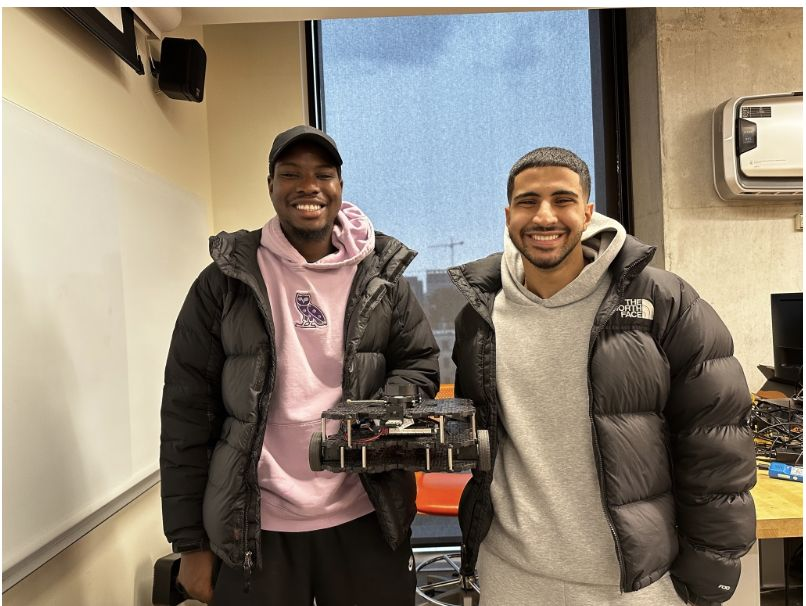
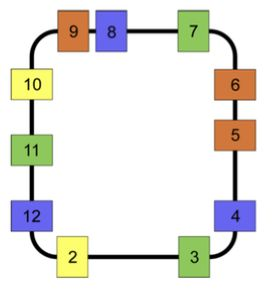

Course project · Nov 2025
Autonomous mail delivery robot
Problem
Program a TurtleBot3 to localize itself from an unknown start on a loop of 11 offices and deliver mail to target offices, using only a camera.
Approach
- Hybrid state machine: PID line following plus RGB colour-patch detection from a camera-derived array.
- Discrete Bayes filter over 11 states (prediction + measurement update), updated once per patch entry.
- Starts a delivery once map confidence is above 0.6.
100%of the loop completed in the demo
4observations to converge
3/3target offices delivered
Demo · real hardware
Full delivery run: line following, localization, deliveries
The TurtleBot3 starts from an unknown spot, localizes on the coloured patches and stops at each target office. Shown at 4× speed.

